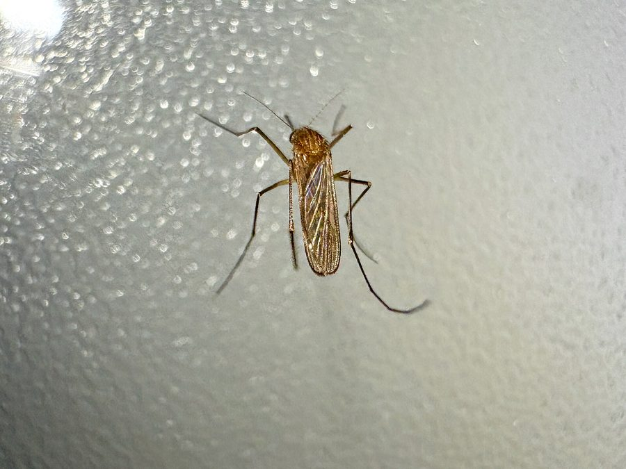
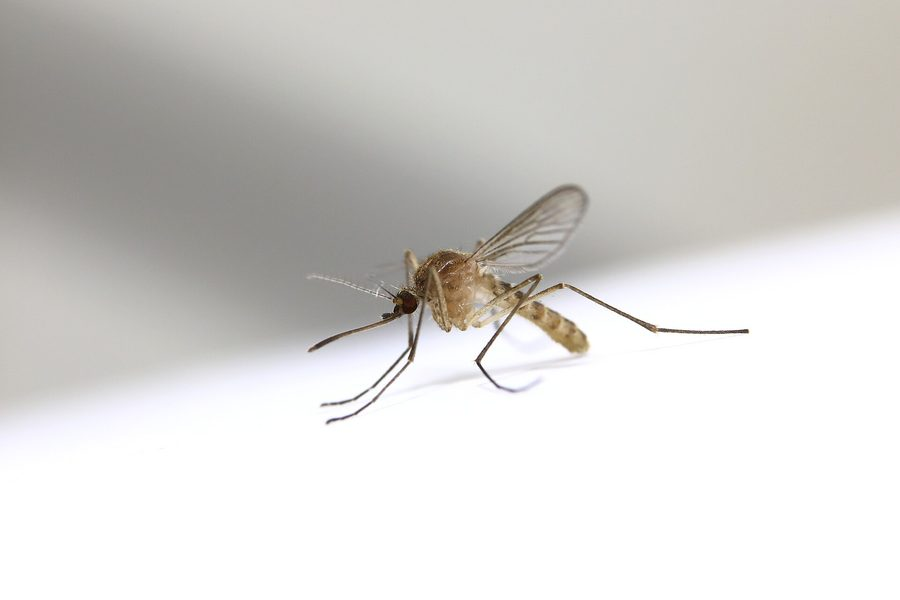
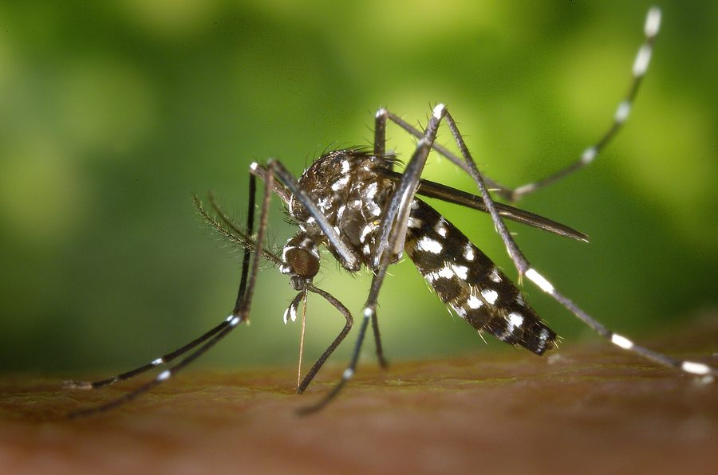
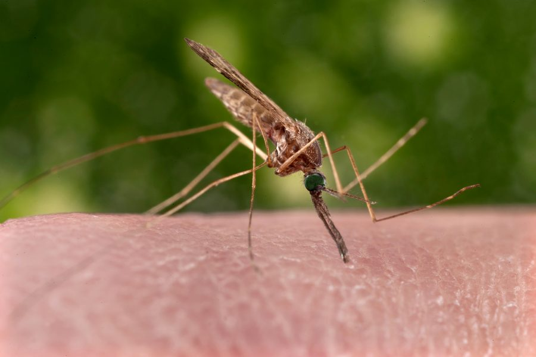
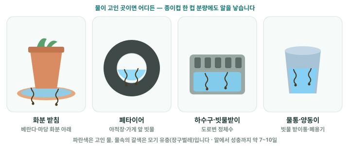
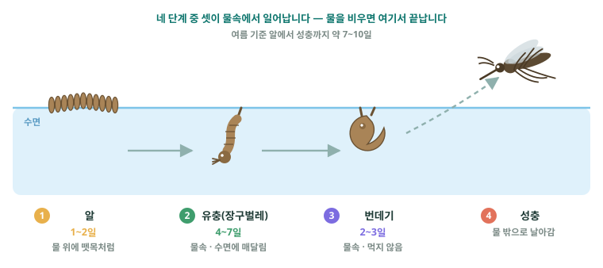
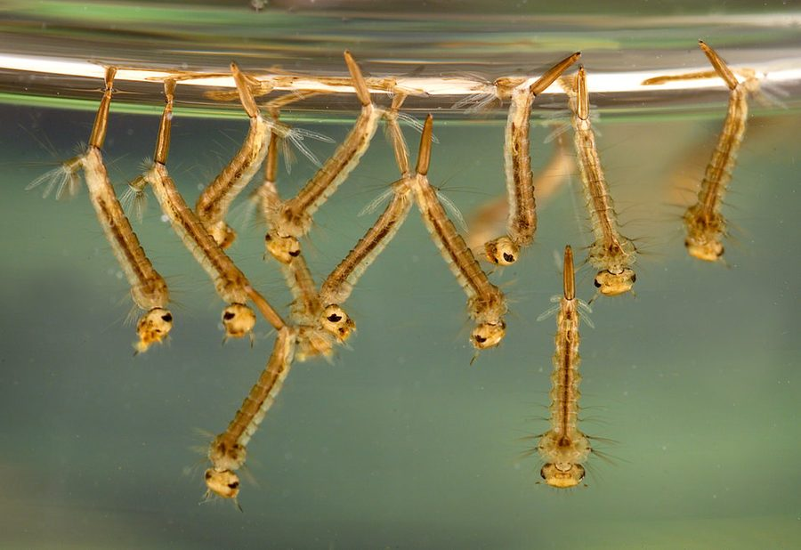
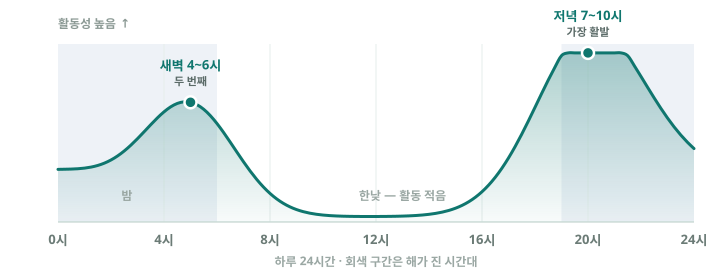

작은빨간집모기 Culex tritaeniorhynchus
일본뇌염
주요 발생원 · 논·관개수로, 축사 주변
모기 정보
모기가 좋아하는 환경, 자주 활동하는 시간, 생활 속 예방 방법을 조금 더 자세하게 정리했습니다.
국내 감염병 매개모기
국내 모기 56종 중 감염병을 매개할 수 있는 종은 약 14종입니다. 종에 따라 옮기는 병과 서식하는 발생원이 다릅니다.

작은빨간집모기 Culex tritaeniorhynchus
일본뇌염
주요 발생원 · 논·관개수로, 축사 주변

빨간집모기 Culex pipiens
웨스트나일열
주요 발생원 · 도시 오수·정화조·하수구

흰줄숲모기 Aedes albopictus
뎅기·지카·치쿤구니야
주요 발생원 · 폐타이어·인공용기 고인물, 숲

얼룩날개모기 Anopheles sinensis
말라리아
주요 발생원 · 논·관개수로·늪·저수지
📊 국내 발생 비율(2013–2015): 얼룩날개모기 52% · 금빛숲모기 38% · 작은빨간집모기 6% · 빨간집모기 3% · 흰줄숲모기 0.3% — 국내에서 가장 많은 종은 말라리아 매개 얼룩날개모기입니다.
💡 발생원 종류에 따라 서식하는 모기와 감염병이 다릅니다. 예를 들어 정화조엔 빨간집모기, 폐타이어엔 흰줄숲모기, 논·저수지엔 얼룩날개모기가 삽니다. 모기제로가 발생원을 핵심 데이터로 보는 이유입니다.
사진 출처 · 흰줄숲모기/얼룩날개모기 미국 질병통제예방센터(CDC), James Gathany(퍼블릭 도메인) · 작은빨간집모기 Kyu3a(CC BY-SA 4.0) · 빨간집모기 根川大橋(CC BY-SA 4.0) · 유충 CDC/James Gathany(퍼블릭 도메인). 모두 위키미디어 커먼즈를 통해 이용했습니다.
출처: 이동규. 「국내 서식 감염병 매개체의 생태학적 특성과 현황」. 대한의사협회지(J Korean Med Assoc) 2017;60(6):458-467.
모기는 일본뇌염·뎅기열·말라리아 등 감염병을 옮길 수 있습니다. 야간 야외활동 시 기피제와 긴 옷을 사용하고, 일본뇌염 예방접종 대상(어린이 등)은 시기에 맞춰 접종하세요. 해외여행 후 발열·근육통·발진이 있으면 진료 시 여행력을 알려 주세요.
모기는 물이 고이기 쉽고 습도가 높은 환경에서 번식과 활동이 쉬워집니다.

모기는 알 · 유충 · 번데기 · 성충 네 단계를 거치는데, 이 중 세 단계가 물속에서 일어납니다. 날아다니는 성충을 잡는 것보다 물을 없애는 쪽이 훨씬 쉽고 확실합니다.

고인 물 속에서 물 표면에 거꾸로 매달려 꼬리 끝의 호흡관으로 숨을 쉽니다. 이 모습이 보이면 그 물은 모기 공장입니다.

모기는 햇빛이 약해지고 바람이 잦아들 때 활동성이 높아지는 편입니다.

모기 수는 자연공원뿐 아니라 작은 생활 공간에서도 늘 수 있습니다. 주변 환경을 한 번만 점검해도 위험을 크게 줄일 수 있습니다.
가장 중요한 건 번식할 곳을 줄이는 것입니다. 작은 물웅덩이도 자주 확인하는 습관이 필요합니다.
오늘 모기지수가 높게 나오면 저녁 야외활동을 줄이고, 노출이 많은 옷차림은 피하는 것이 좋습니다. 특히 공원, 하천 주변, 배수구가 많은 골목은 한 번 더 주의해 주세요.
주말마다 베란다, 화분 받침, 에어컨 배수구, 현관 주변을 짧게 둘러보는 것만으로도 모기가 번식할 환경을 크게 줄일 수 있습니다.
모기 기피제는 외출 직전에 노출 부위에 사용하고, 방충망은 찢어진 곳이 없는지 확인하는 것이 좋습니다. 실내에서는 문을 오래 열어둘 때 특히 주의가 필요합니다.
본 페이지는 질병관리청·보건소의 일반적인 모기 예방 지침을 참고해 정리한 것으로, 참고용 안내입니다. 증상·예방접종 등 의학적 판단은 전문기관의 안내를 따르세요.